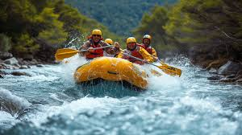
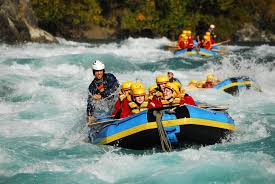
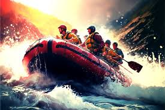
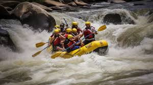

OS Whitewater Rafting Adventures
Branding: The Whitewater Rafting Site Plan Site aims to create an adventurous and exhilarating experience for thrill seekers and nature enthusiasts. The branding focuses on the excitement and environmental stewardship. The logo features dynamic waves and a raft, symbolizing the thrill of the rapids and the spirit of adventure. The color palette includes shades of blue green, representing water and nature, with accents of white and yellow to convey energy and excitement. Typography: The typography of the Whitewater Rafting Site Plan is bold and modern, reflecting the adventurous spirit of the brand. The primary font is a sans-serif typeface, chosen for its clean and contemporary look, which ensures readability and a strong visual impact. The headings use a bold version of the font to grab attention, while the body and text uses a regular weight for easy reading. The font color is primarily dark blue, complementing the overall color scheme and maintaining a cohesive visual identity.
Experience the Thrill of OS Whitewater Rafting
Experience with The OS Whitewater Rafting. With over hundred employess and with their vast experience through the high mountains and terrain it's a experience a a experience of a life time that you don't wanna miss.
OS Whitewater Rafting
Enjoy The Roughness of The High Speed Fresh Waters.
This is the most experience Whitewater Rafting Site you'll see and enjoy during your visit. As you flow down this fresh rivers of te jungle. It will be a experience of a life time and enjoyment, the entertainment that comes with the thrilling experience is unlike you've experienced before. It will the live you with an unforgettable taste of the wild and add to your remarkable experienced in rafting quest.
Thrilling Experience Will Live You Speechless
In OS Whitewater Rafting Site. It's the only site in the internet right now having more than 70 000 tourists travelling in every year to experience the uniquness of the fresh waters and softness that flows with the rafting craft down stream. With over thousand employees with the vast experience among them. To lead, participate and instruct visitors makes a tourist destination you wanna miss.
The Natural Beauty of The OS Whitewater Rafting Site
The nature itself at the site is incredible with the vast flowing rivers into the cernal of the curved walls build by the natural cutting of the water which will live you breathless and more energised for more thrilling experienced as you sail through the walls and down the streams as the raft leads you through a ride of a life time.
The most best rafting site you'll ever experience. At OS Whitewater Rafting we provide the best rafting equipment and with our experience staff to guide you through is bonus. With the best of our experience we could assure you thar this will be a memorable place you've ever visited.
